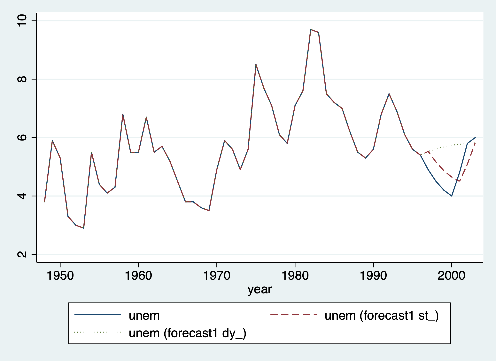
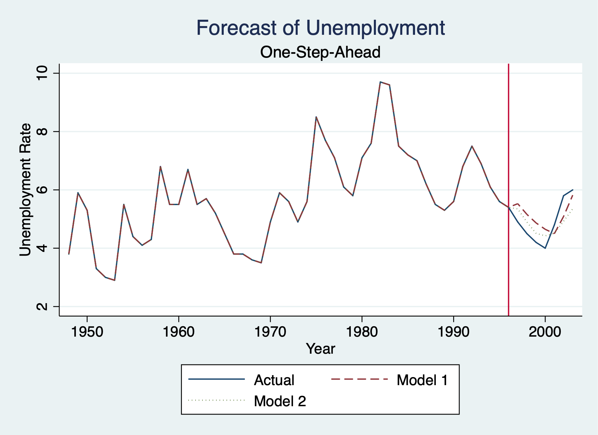

Chapter 2 Forecasting
2.1 One-Step Ahead Model vs Dynamic AR(1) Model
One-step ahead we can use predict or forecast for AR(1). We use the estimates store command to store our results for our AR(1) model.
One-Step Ahead Model
We can get one-step ahead just using predict
Forecast - One-step-ahead forecast. We three addition commands:
- forecast create
- forecast estimates
- forecast solve
For a one-step ahead forecast, static is our key option otherwise it will not be a one-step ahead forecast.
Computing static forecasts for model forecast1.
-----------------------------------------------
Starting period: 1997
Ending period: 2003
Forecast prefix: st_
1997: .............
1998: .............
1999: ..............
2000: ..............
2001: ..............
2002: .............
2003: ............
Forecast 1 variable spanning 7 periods.
---------------------------------------
+------------------------------+
| year unem st_unem |
|------------------------------|
50. | 1997 4.9000001 5.5264521 |
51. | 1998 4.5 5.160275 |
52. | 1999 4.1999998 4.8673334 |
53. | 2000 4 4.6476274 |
54. | 2001 4.8000002 4.5011568 |
|------------------------------|
55. | 2002 5.8000002 5.0870399 |
56. | 2003 6 5.8193936 |
+------------------------------+Dynamic Model
Dynamic model - We won’t use l.unem but l.dy_unem
Computing dynamic forecasts for model forecast1.
------------------------------------------------
Starting period: 1997
Ending period: 2003
Forecast prefix: dy_
1997: .............
1998: .............
1999: ............
2000: ............
2001: ............
2002: ............
2003: ............
Forecast 1 variable spanning 7 periods.
---------------------------------------
+------------------------------------------+
| year unem st_unem dy_unem |
|------------------------------------------|
50. | 1997 4.9000001 5.5264521 5.5264521 |
51. | 1998 4.5 5.160275 5.6190596 |
52. | 1999 4.1999998 4.8673334 5.6868811 |
53. | 2000 4 4.6476274 5.7365503 |
54. | 2001 4.8000002 4.5011568 5.7729259 |
|------------------------------------------|
55. | 2002 5.8000002 5.0870399 5.7995653 |
56. | 2003 6 5.8193936 5.8190751 |
+------------------------------------------+Graph Model
Graph Actual, One-Step-Ahead Model, and Dynamic Model
twoway line unem year || line st_unem year, lpattern(dash) || line dy_unem year, lpattern(dot)
graph export "/Users/Sam/Desktop/Econ 645/Stata/week_11_static_v_dynamic.png", replace
Root Mean Squared Error (RMSE)
Calculate RMSE for AR(1) model
gen e = unem - st_unem
gen e2 = e^2
sum e2 if test==1
scalar esum= `r(sum)'/`r(N)'
scalar model1_RMSE= esum^.5
display model1_RMSE Variable | Obs Mean Std. Dev. Min Max
-------------+---------------------------------------------------------
e2 | 7 .3319141 .1891047 .0326187 .5083123
.57611988Mean Absolute Error (MAE)
Calculate MAE for AR(1) model
gen e_abs = abs(e) if test ==1
sum e_abs if test==1
scalar model1_MAE=`r(mean)'
display model1_MAE(49 missing values generated)
Variable | Obs Mean Std. Dev. Min Max
-------------+---------------------------------------------------------
e_abs | 7 .542014 .2109284 .1806064 .7129602
.542013992.2 One-Step Ahead VAR Model
One-step ahead we can use predict or forecast for VAR Model (lagged employment and lagged inflation)
Train the Model
Our predict command will produce the same results as forecast solve, static
Forecast for Model 2
One-Step-Ahead Forecast of VAR Model
Computing static forecasts for model forecast2.
-----------------------------------------------
Starting period: 1997
Ending period: 2003
Forecast prefix: st2_
1997: ............
1998: ...........
1999: ...........
2000: .............
2001: ..............
2002: .............
2003: ..............
Forecast 1 variable spanning 7 periods.
---------------------------------------
+------------------------------+
| year unem st2_unem |
|------------------------------|
50. | 1997 4.9000001 5.3484678 |
51. | 1998 4.5 4.896451 |
52. | 1999 4.1999998 4.5091372 |
53. | 2000 4 4.4251752 |
54. | 2001 4.8000002 4.5160618 |
|------------------------------|
55. | 2002 5.8000002 4.9235368 |
56. | 2003 6 5.3502712 |
+------------------------------+Dynamic Forecast of VAR Model
Computing dynamic forecasts for model forecast2.
------------------------------------------------
Starting period: 1997
Ending period: 2003
Forecast prefix: dy2_
1997: ............
1998: .............
1999: .............
2000: ............
2001: .............
2002: ............
2003: .............
Forecast 1 variable spanning 7 periods.
---------------------------------------
+------------------------------------------+
| year unem st2_unem dy2_unem |
|------------------------------------------|
50. | 1997 4.9000001 5.3484678 5.3484678 |
51. | 1998 4.5 4.896451 5.1866217 |
52. | 1999 4.1999998 4.5091372 4.9533992 |
53. | 2000 4 4.4251752 4.9126439 |
54. | 2001 4.8000002 4.5160618 5.1065664 |
|------------------------------------------|
55. | 2002 5.8000002 4.9235368 5.1218934 |
56. | 2003 6 5.3502712 4.9115181 |
+------------------------------------------+2.2.1 Calculate RMSE and MAE
Calculate RMSE for the VAR model
gen e = unem - st2_unem
gen e2 = e^2
sum e2 if test==1
scalar esum2 = `r(sum)'/`r(N)'
scalar model2_RMSE=esum2^.5
display model2_RMSE Variable | Obs Mean Std. Dev. Min Max
-------------+---------------------------------------------------------
e2 | 7 .2722276 .2459784 .080621 .7681881
.52175434Calculate MAE for VAR model
Variable | Obs Mean Std. Dev. Min Max
-------------+---------------------------------------------------------
e_abs | 7 .4841946 .2099534 .2839384 .8764634
.484194552.3 Compare AR(1) and VAR models
Which model do we use? The model that minimizes the error.
Compare Results with RMSE and MSE
display "Model 1: RMSE="model1_RMSE " and MAE="model1_MAE
display "Model 2: RMSE="model2_RMSE " and MAE="model1_MAE
display "Model 2 with lagged unemployment and lagged inflation has lower RMSE and MAE."Model 1: RMSE=.57611988 and MAE=.54201399
Model 2: RMSE=.52175434 and MAE=.48419455
Model 2 with lagged unemployment and lagged inflation has lower RMSE and MAE.Graph the Forecasts
Forecasting Line
twoway line unem year || line st_unem year, lpattern(dash) || line st2_unem year, lpattern(dot) ///
title("Forecast of Unemployment") xtitle("Year") subtitle("One-Step-Ahead") ytitle("Unemployment Rate") xline(1996) ///
legend(order(1 "Actual" 2 "Model 1" 3 "Model 2"))
graph export "/Users/Sam/Desktop/Econ 645/Stata/week_11_forecast.png", replace